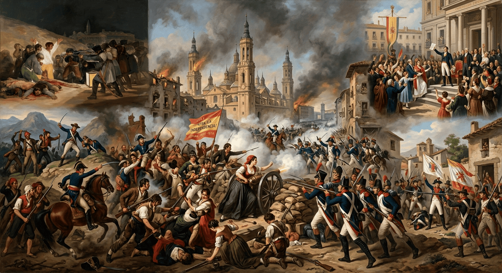

Historia de España
Aula Virtual de Lectura Fácil • 2º Bachillerato LOMLOE

🧭 Bloque 0: Metodología Histórica
Empezar Bloque 0
⚖️ Bloque I: La Construcción del Estado Liberal
Próximamente
👑 Bloque II: La Restauración Borbónica
Próximamente
⚡ Bloque III: La Quiebra de la Restauración y la Dictadura
Próximamente
✊ Bloque IV: La Segunda República y la Guerra Civil
Próximamente
🔒 Bloque V: La Dictadura Franquista
Próximamente
🗳️ Bloque VI: La Transición Española
Próximamente